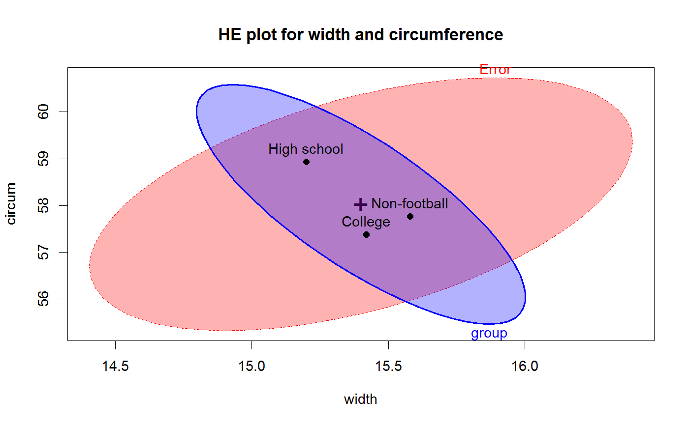
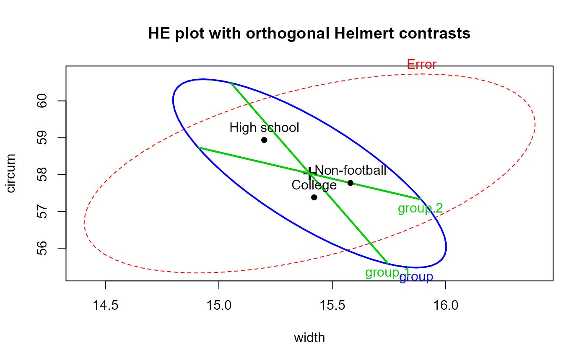
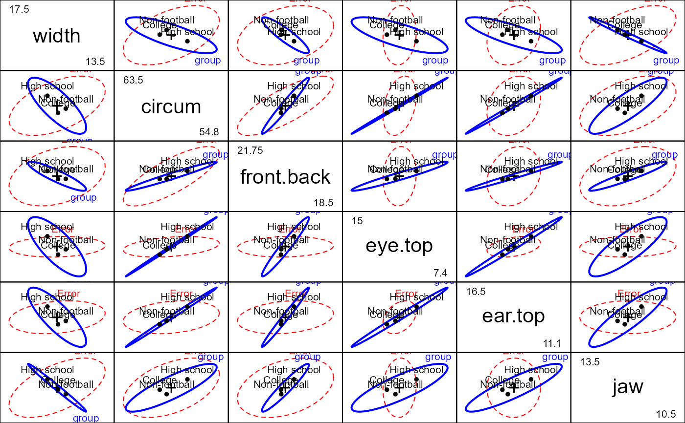

Data collected as part of a preliminary study examining the relation between football helmet design and neck injuries. There are 30 subjects in each of three groups: High school football players, college players and non-football players.
Format
A data frame with 90 observations on the following 7 variables.
groupa factor with levels
High schoolCollegeNon-footballwidtha numeric vector: head width at widest dimension
circuma numeric vector: head circumference
front.backa numeric vector: front to back distance at eye level
eye.topa numeric vector: eye to top of head
ear.topa numeric vector:ear to top of head
jawa numeric vector: jaw width
Examples
data(FootHead)
str(FootHead)
#> 'data.frame': 90 obs. of 7 variables:
#> $ group : Factor w/ 3 levels "High school",..: 1 1 1 1 1 1 1 1 1 1 ...
#> $ width : num 13.5 15.5 14.5 15.5 14.5 14 15 15 15.5 15.5 ...
#> $ circum : num 57.1 58.4 55.9 58.4 58.4 ...
#> $ front.back: num 19.5 21 19 20 20 21 19.5 21 20.5 20.5 ...
#> $ eye.top : num 12.5 12 10 13.5 13 12 13.5 13 13.5 13 ...
#> $ ear.top : num 14 16 13 15 15.5 14 15.5 14 14.5 15 ...
#> $ jaw : num 11 12 12 12 12 13 13 13 12.5 13 ...
require(car)
# use Helmert contrasts for group
contrasts(FootHead$group) <- contr.helmert
contrasts(FootHead$group)
#> [,1] [,2]
#> High school -1 -1
#> College 1 -1
#> Non-football 0 2
foot.mod <- lm(cbind(width, circum,front.back,eye.top,ear.top,jaw) ~ group,
data=FootHead)
Manova(foot.mod)
#>
#> Type II MANOVA Tests: Pillai test statistic
#> Df test stat approx F num Df den Df Pr(>F)
#> group 2 0.76116 8.4994 12 166 1.876e-12 ***
#> ---
#> Signif. codes: 0 '***' 0.001 '**' 0.01 '*' 0.05 '.' 0.1 ' ' 1
# show the HE plot for the first two variables
heplot(foot.mod, main="HE plot for width and circumference", fill=TRUE,
col=c("red", "blue"))

# show it with tests of Helmert contrasts
heplot(foot.mod, hypotheses=list("group.1"="group1","group.2"="group2"),
col=c("red", "blue", "green3", "green3" ),
main="HE plot with orthogonal Helmert contrasts")

# show all pairwise HE plots
pairs(foot.mod)

# ... with tests of Helmert contrasts
pairs(foot.mod, hypotheses=list("group.1"="group1","group.2"="group2"),
col=c("red", "blue", "green3", "green3"), hyp.labels=FALSE)
 # see that the hypothesis for groups really is 2D
if(requireNamespace("rgl")){
heplot3d(foot.mod, variables=c(1,2,6),
hypotheses=list("group.1"="group1","group.2"="group2"),
col=c("red", "blue", "green3", "green3" ), wire=FALSE)
}
# see that the hypothesis for groups really is 2D
if(requireNamespace("rgl")){
heplot3d(foot.mod, variables=c(1,2,6),
hypotheses=list("group.1"="group1","group.2"="group2"),
col=c("red", "blue", "green3", "green3" ), wire=FALSE)
}